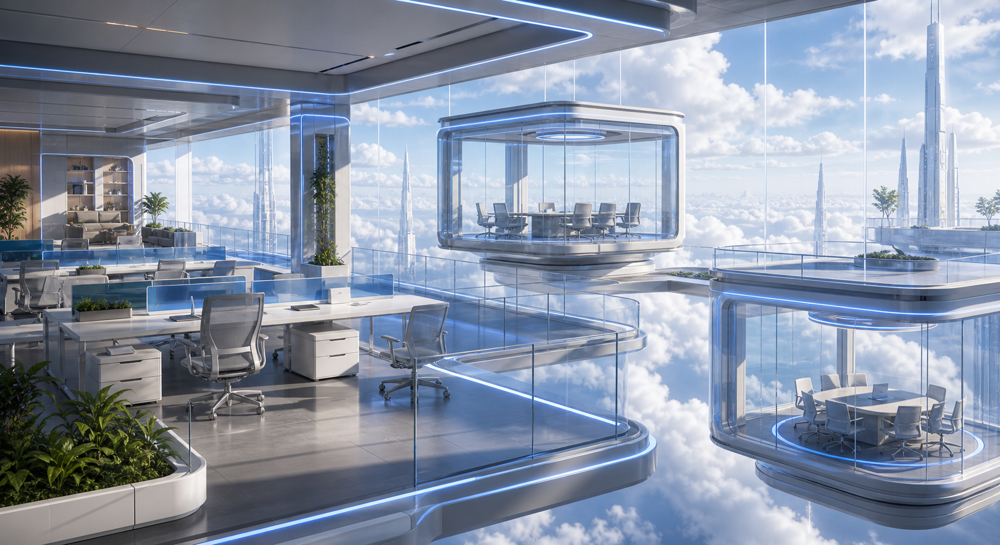
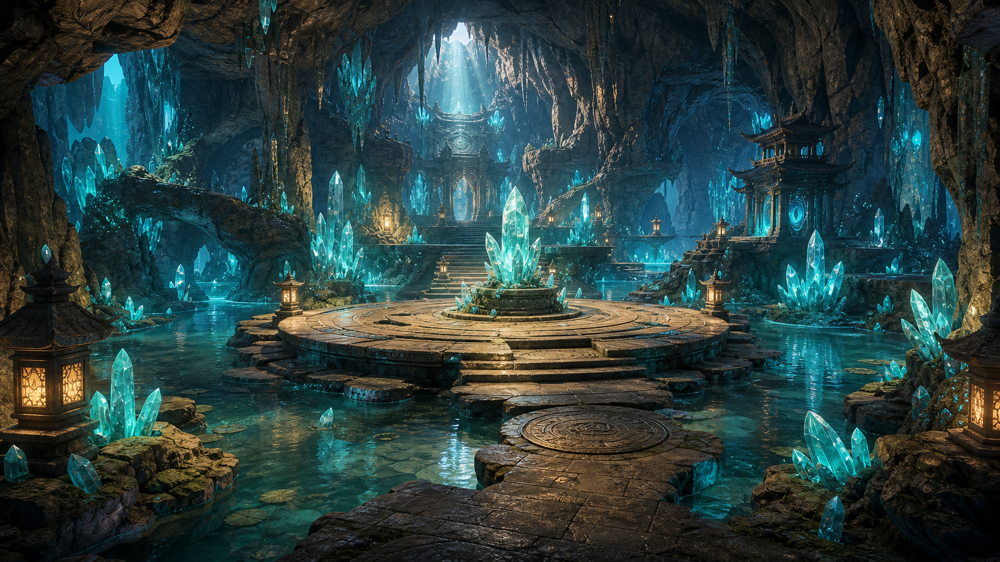

分镜 1: 雨夜码头视频生成中定稿视频47 / 3000
码头的陌生来信
ASSETS ↓ STORYBOARDS
剧本已确认 · 2,816 字 · 6 项资产 · 12 个分镜
Asset production
6 项 · 1 项生成中资产制作
分镜制作
第 01 章 · 12 镜 · 预计 01:24分镜 2: 盐渍地图待生成定稿视频38 / 3000
分镜 3: 档案室对峙分镜图生成中定稿视频

37 / 3000分镜 4: 钟楼铁门需重试定稿视频

43 / 3000